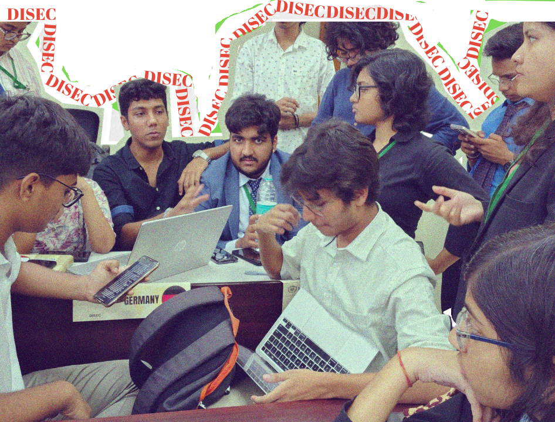
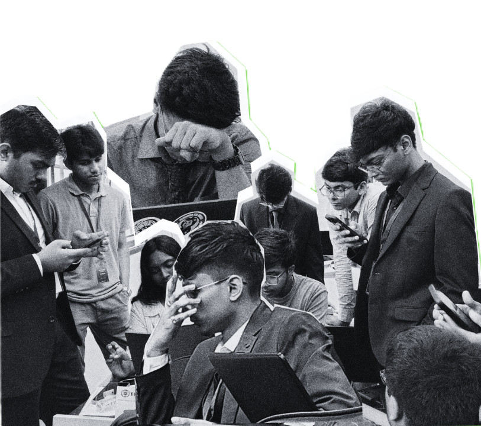
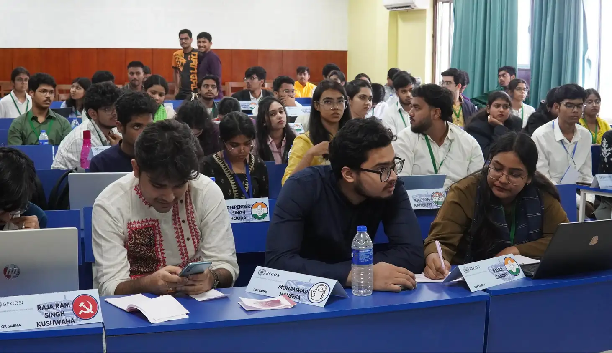

DISEC





DISEC debated the non-proliferation of an arms race in space. The competitive committee saw an evolving discussion spanning international law, treaties, conventions, and the geopolitics of space.
“Space? Arms race? DISEC was an astonishingly engaging committee. There were references, clauses and arguments everywhere.”
The Executive Board encouraged participation with questions that helped delegates refine their understanding of the UN system. It was a committee where there was always another sharp point to note down.